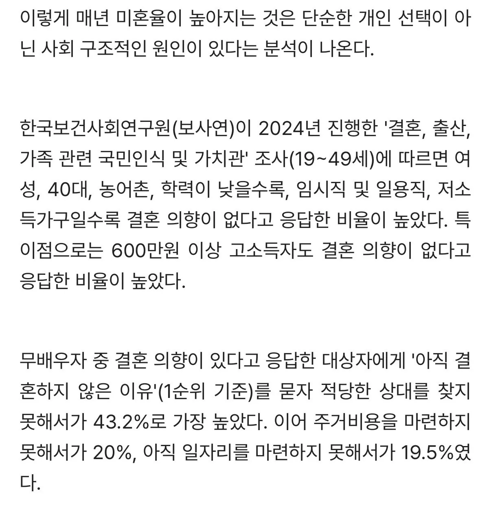
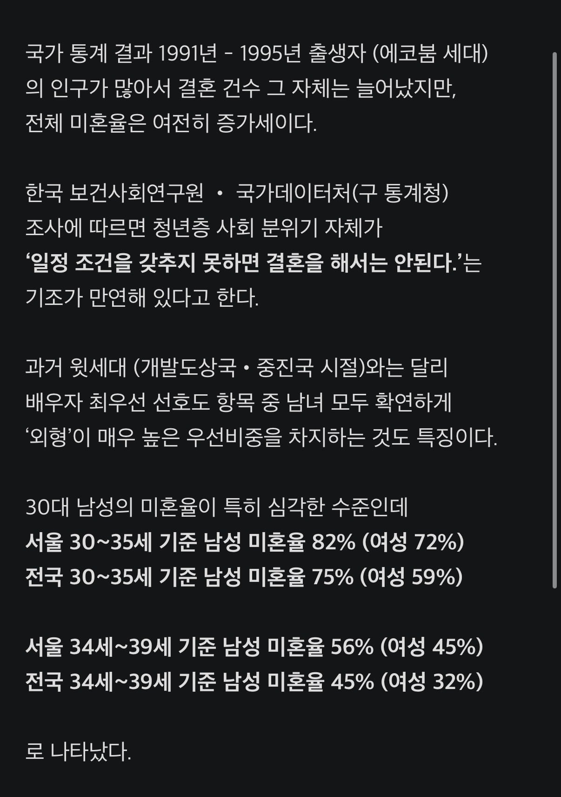

국가 통계 결과가 나왔는데 청년 인구가 밀집한
서울의 34세 - 39세 남성(평균 초혼 연령 이상) 미혼율조차
50%를 넘었다는게 엄청나게 충격적인 결과라고 함
* 생애미혼율이라서 이혼자는 미혼에 포함되지 않음


국가 통계 결과가 나왔는데 청년 인구가 밀집한
서울의 34세 - 39세 남성(평균 초혼 연령 이상) 미혼율조차
50%를 넘었다는게 엄청나게 충격적인 결과라고 함
* 생애미혼율이라서 이혼자는 미혼에 포함되지 않음
반려자ai는 이제 선택이 아니라 필수다
인스타랑 비혼장려 티비프로그램 다없애야됨
여혐이라고 한다면 할 수 없지만 지금 93년 미혼 남자로서 가족부터 지인 여자들이 결혼 관련 이야기 들어보면 월급, 외모, 자산, 학력, 직장 다 따지는 거 듣고 있음 그거 맞춰 줄 수가 없음 그래서 난 애초에 연애 대상에도 들어가지 않음... 기준에 충족하지 않으니까
그니까 이런거볼때마다 이 통계가 혼인신고 안한 부부들은 못잡는거아니냐고~
사실혼은 말만 사실혼이지 그냥 동거임
중딩들이 서로 아내 남편이라고 부르던 그런느낌
이젠 30대도 '애새끼'다
근데 대출 때문에라도 혼인신고 안하는데 그런거 하나도 안잡힌거 아님?
다들 예상한거 아니었나 충격 ㄴㄴ해
3대남 미친새끼들... 나라가 망해도 좋다 이거냐...!!??!
아직 40대 여성들 폐경안왔다 노력해라 4대남
솔직히 잘 맞는 사람 만나서 결혼하고 애도 낳고 하고싶음. 근데 요즘 AI때문에 내일모레 어떻게 될지도 몰라서 존나 무서움. 가정 이루고 와이프 임신했는데 갑자기 AI때문에 나랑 와이프랑 다 실직자 되면 그대로 지옥행.